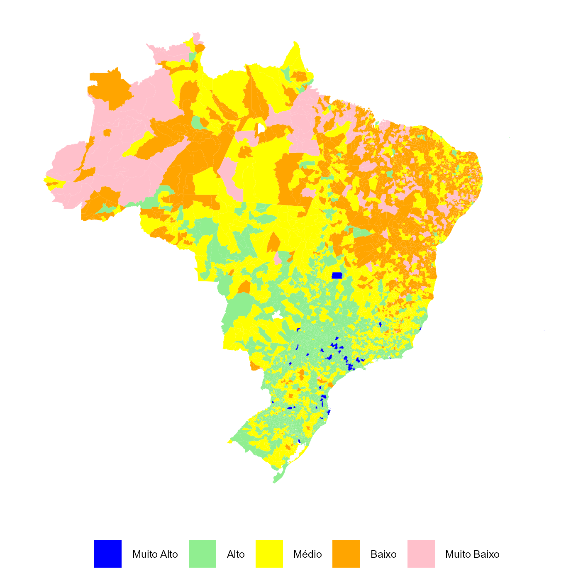
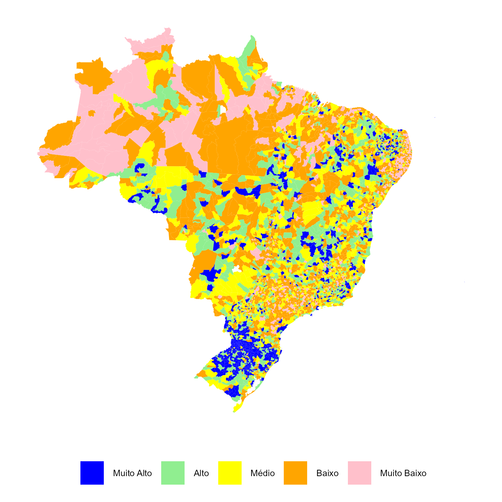

Capítulo 4 As OSCs no Território
Esta seção trata da distribuição regional e estadual das Organizações da Sociedade Civil - OSCs, a densidade de organizações no território, seus graus de concentração e a presença nas capitais, bem como os Índices de Desenvolvimento Humano - IDH das regiões em que estão localizadas.
Tabela 4.1 - Número e percentual de OSCs, segundo as Grandes Regiões e as Unidades da Federação
| Grandes Regiões e Unidades da Federação |
OSCs
|
População
|
OSCs por mil habitantes | ||
|---|---|---|---|---|---|
| Total | (%) | Total | (%) | ||
| Região Norte | 68.252 | 2,5 | 17.331.383 | 2,8 | 3,9 |
| Rondônia | 9.081 | 0,3 | 1.581.196 | 0,3 | 5,7 |
| Acre | 3.959 | 0,1 | 830.018 | 0,1 | 4,8 |
| Amazonas | 13.525 | 0,5 | 3.941.613 | 0,6 | 3,4 |
| Roraima | 2.439 | 0,1 | 636.707 | 0,1 | 3,8 |
| Pará | 26.583 | 1,0 | 8.096.630 | 1,3 | 3,3 |
| Amapá | 3.770 | 0,1 | 733.759 | 0,1 | 5,1 |
| Tocantins | 8.895 | 0,3 | 1.511.460 | 0,2 | 5,9 |
| Região Nordeste | 224.253 | 8,1 | 54.658.515 | 9,0 | 4,1 |
| Maranhão | 28.130 | 1,0 | 6.776.699 | 1,1 | 4,2 |
| Piauí | 15.130 | 0,5 | 3.271.199 | 0,5 | 4,6 |
| Ceará | 36.092 | 1,3 | 8.794.957 | 1,4 | 4,1 |
| Rio Grande do Norte | 12.647 | 0,5 | 3.302.729 | 0,5 | 3,8 |
| Paraíba | 16.851 | 0,6 | 3.974.687 | 0,7 | 4,2 |
| Pernambuco | 31.233 | 1,1 | 9.058.931 | 1,5 | 3,4 |
| Alagoas | 10.317 | 0,4 | 3.127.683 | 0,5 | 3,3 |
| Sergipe | 8.695 | 0,3 | 2.210.004 | 0,4 | 3,9 |
| Bahia | 65.158 | 2,4 | 14.141.626 | 2,3 | 4,6 |
| Região Sudeste | 381.423 | 13,9 | 84.840.113 | 13,9 | 4,5 |
| Minas Gerais | 98.713 | 3,6 | 20.539.989 | 3,4 | 4,8 |
| Espírito Santo | 20.097 | 0,7 | 3.833.712 | 0,6 | 5,2 |
| Rio de Janeiro | 76.513 | 2,8 | 16.055.174 | 2,6 | 4,8 |
| São Paulo | 186.100 | 6,8 | 44.411.238 | 7,3 | 4,2 |
| Região Sul | 165.076 | 6,0 | 29.908.812 | 4,9 | 5,5 |
| Paraná | 56.197 | 2,0 | 11.444.380 | 1,9 | 4,9 |
| Santa Catarina | 46.254 | 1,7 | 7.584.190 | 1,2 | 6,1 |
| Rio Grande do Sul | 62.625 | 2,3 | 10.880.242 | 1,8 | 5,8 |
| Região Centro-Oeste | 78.723 | 2,9 | 16.284.028 | 2,7 | 4,8 |
| Mato Grosso do Sul | 13.816 | 0,5 | 2.751.503 | 0,5 | 5,0 |
| Mato Grosso | 16.362 | 0,6 | 3.658.649 | 0,6 | 4,5 |
| Goiás | 29.344 | 1,1 | 7.056.495 | 1,2 | 4,2 |
| Distrito Federal | 19.201 | 0,7 | 2.817.381 | 0,5 | 6,8 |
| Total | 917.727 | 33,3 | 203.022.851 | 33,3 | 4,5 |
| Nota: Dados atualizados até Fevereiro 2025. Fonte: Mapa das Organizações da Sociedade Civil. Elaboração do IPEA. |
|||||
Gráfico 4.1 - Número de OSCs por mil habitantes, por Grandes Regiões e Unidades da Federação
Média nacional representada pela linha vermelha.

Tabela 4.2 - Número de OSCs, OSCs por mil habitantes e percentual de OSCs nas capitais do país
| Capitais |
OSCs
|
População
|
OSCs por mil habitantes
|
|||||
|---|---|---|---|---|---|---|---|---|
| Capital | UF | Capital (%) | Capital | UF | Capital (%) | Capital | UF | |
| BRASÍLIA (DF) | 19.201 | 19.201 | 100,0 | 2817381 | 2.817.381 | 100,0 | 6,8 | 6,8 |
| BOA VISTA (RR) | 1.710 | 2.439 | 70,1 | 413486 | 636.707 | 64,9 | 4,1 | 3,8 |
| MACAPÁ (AP) | 2.387 | 3.770 | 63,3 | 442933 | 733.759 | 60,4 | 5,4 | 5,1 |
| RIO BRANCO (AC) | 2.090 | 3.959 | 52,8 | 364756 | 830.018 | 43,9 | 5,7 | 4,8 |
| MANAUS (AM) | 6.856 | 13.525 | 50,7 | 2063689 | 3.941.613 | 52,4 | 3,3 | 3,4 |
| RIO DE JANEIRO (RJ) | 29.803 | 76.513 | 39,0 | 6211223 | 16.055.174 | 38,7 | 4,8 | 4,8 |
| MACEIÓ (AL) | 3.692 | 10.317 | 35,8 | 957916 | 3.127.683 | 30,6 | 3,9 | 3,3 |
| CUIABÁ (MS) | 4.863 | 13.816 | 35,2 | 898100 | 2.751.503 | 32,6 | 5,4 | 5,0 |
| PORTO VELHO (RO) | 2.938 | 9.081 | 32,4 | 460434 | 1.581.196 | 29,1 | 6,4 | 5,7 |
| SÃO PAULO (SP) | 57.612 | 186.100 | 31,0 | 11451999 | 44.411.238 | 25,8 | 5,0 | 4,2 |
| ARACAJU (SE) | 2.589 | 8.695 | 29,8 | 602757 | 2.210.004 | 27,3 | 4,3 | 3,9 |
| PALMAS (TO) | 2.448 | 8.895 | 27,5 | 302692 | 1.511.460 | 20,0 | 8,1 | 5,9 |
| FORTALEZA (CE) | 8.832 | 36.092 | 24,5 | 2428708 | 8.794.957 | 27,6 | 3,6 | 4,1 |
| GOIÂNIA (GO) | 6.837 | 29.344 | 23,3 | 1437366 | 7.056.495 | 20,4 | 4,8 | 4,2 |
| TERESINA (PI) | 3.439 | 15.130 | 22,7 | 866300 | 3.271.199 | 26,5 | 4,0 | 4,6 |
| NATAL (RN) | 2.817 | 12.647 | 22,3 | 751300 | 3.302.729 | 22,7 | 3,7 | 3,8 |
| RECIFE (PE) | 6.298 | 31.233 | 20,2 | 1488920 | 9.058.931 | 16,4 | 4,2 | 3,4 |
| JOÃO PESSOA (PB) | 3.394 | 16.851 | 20,1 | 833932 | 3.974.687 | 21,0 | 4,1 | 4,2 |
| CAMPO GRANDE (MT) | 3.281 | 16.362 | 20,1 | 650877 | 3.658.649 | 17,8 | 5,0 | 4,5 |
| SÃO LUÍS (MA) | 5.096 | 28.130 | 18,1 | 1037775 | 6.776.699 | 15,3 | 4,9 | 4,2 |
| BELÉM (PA) | 4.495 | 26.583 | 16,9 | 1303403 | 8.096.630 | 16,1 | 3,4 | 3,3 |
| CURITIBA (PR) | 9.454 | 56.197 | 16,8 | 1773718 | 11.444.380 | 15,5 | 5,3 | 4,9 |
| SALVADOR (BA) | 9.020 | 65.158 | 13,8 | 2417678 | 14.141.626 | 17,1 | 3,7 | 4,6 |
| VITÓRIA (ES) | 2.576 | 20.097 | 12,8 | 322869 | 3.833.712 | 8,4 | 8,0 | 5,2 |
| PORTO ALEGRE (RS) | 7.934 | 62.625 | 12,7 | 1332845 | 10.880.242 | 12,3 | 6,0 | 5,8 |
| BELO HORIZONTE (MG) | 11.936 | 98.713 | 12,1 | 2315560 | 20.539.989 | 11,3 | 5,2 | 4,8 |
| FLORIANÓPOLIS (SC) | 4.457 | 46.254 | 9,6 | 537211 | 7.584.190 | 7,1 | 8,3 | 6,1 |
| Totais | 226.055 | 917.727 | 833,5 | 46485828 | 203.022.851 | - | - | - |
| Nota: Dados atualizados até Fevereiro 2025. Fonte: Mapa das Organizações da Sociedade Civil. Elaboração do IPEA. |
||||||||
Gráfico 4.2 - Habitantes e OSCs nas capitais em relação ao total da população e OSCs da UF

Tabela 4.3 - Número de OSCs, densidade de organizações por mil habitantes e IDHM nas capitais dos estados
| Nome da Capital | OSCs | OSCs por mil habitantes | IDHM |
|---|---|---|---|
| BOA VISTA | 1.710 | 4,1 | 0,8 |
| RIO BRANCO | 2.090 | 5,7 | 0,7 |
| MACAPÁ | 2.387 | 5,4 | 0,7 |
| PALMAS | 2.448 | 8,1 | 0,8 |
| VITÓRIA | 2.576 | 8,0 | 0,8 |
| ARACAJU | 2.589 | 4,3 | 0,8 |
| NATAL | 2.817 | 3,7 | 0,8 |
| PORTO VELHO | 2.938 | 6,4 | 0,7 |
| CAMPO GRANDE | 3.281 | 5,0 | 0,8 |
| JOÃO PESSOA | 3.394 | 4,1 | 0,8 |
| TERESINA | 3.439 | 4,0 | 0,8 |
| MACEIÓ | 3.692 | 3,9 | 0,7 |
| FLORIANÓPOLIS | 4.457 | 8,3 | 0,8 |
| BELÉM | 4.495 | 3,4 | 0,7 |
| CUIABÁ | 4.863 | 5,4 | 0,8 |
| SÃO LUÍS | 5.096 | 4,9 | 0,8 |
| RECIFE | 6.298 | 4,2 | 0,8 |
| GOIÂNIA | 6.837 | 4,8 | 0,8 |
| MANAUS | 6.856 | 3,3 | 0,7 |
| PORTO ALEGRE | 7.934 | 6,0 | 0,8 |
| FORTALEZA | 8.832 | 3,6 | 0,8 |
| SALVADOR | 9.020 | 3,7 | 0,8 |
| CURITIBA | 9.454 | 5,3 | 0,8 |
| BELO HORIZONTE | 11.936 | 5,2 | 0,8 |
| BRASÍLIA | 19.201 | 6,8 | 0,8 |
| RIO DE JANEIRO | 29.803 | 4,8 | 0,8 |
| SÃO PAULO | 57.612 | 5,0 | 0,8 |
| Nota: Dados atualizados até Fevereiro 2025. Fonte: Mapa das Organizações da Sociedade Civil. Elaboração do IPEA. |
|||
Gráfico 4.3 - Correlação entre a densidade de Organizações por mil habitantes e IDHM nas capitais dos estados

Figura 4.1 - Mapa - Distribuição do IDH Municipal no Território Brasileiro

Figura 4.2 - Mapa - Distribuição das OSC por mil habitantes no Território Brasileiro
